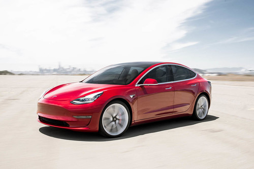

Gil Kalai no es el único investigador que defiende la imposibilidad de alcanzar la supremacía cuántica, pero es uno de los que lo hacen con más vehemencia. Este reputado matemático israelí que da clase en Yale asegura que nunca alcanzaremos este logro porque a medida que se incrementa el número de estados de un sistema cuántico, y, por tanto, su complejidad, es más probable que se comporte como uno clásico, lo que provocaría que pierda cualquier ventaja sobre una máquina convencional.
IPhone 11 Pro,primeras impresiones: los cambios han favorecido al que aspira a ser el buque insignia compacto más completo del año
Huawei Mate 30 sin Google: lo que sabemos, lo que no, y qué diferencia a este proyecto de los que ya hemos visto antes
A partir de ahora los Tesla Model 3 sonarán como un ovni o como un coche de gasolina, según hacia dónde vayan
